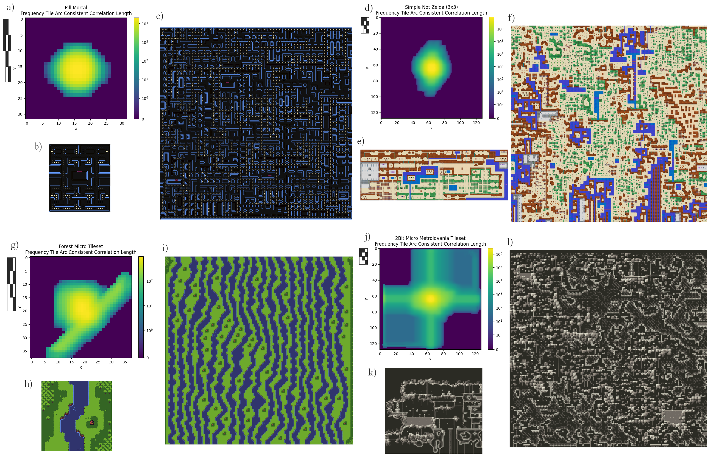

Punch Out Model Synthesis Algorithm Overview
POMS works by initially setting the grid to an indeterminate state and progressively realizing sub blocks of the grid. Block boundary edges that fall within the larger grid body are pinned so that, should a block realization succeed, the block can be re-integrated back into the larger grid. Should block level realization fail, depending on the type of block realization failure, either the failed block region is set to an indeterminate state or the block region is restored to its previous state and all realized region boundaries within the grid are considered for erosion by probabilistically setting them to an indeterminate state.
Overview of a single step of the Punch Out Model Synthesis algorithm.

Overview of the Tile Arc Consistent Correlation Length, exemplar image and resulting example for four 2D tile sets.
Example Outputs
Example output of Punch Out Model Synthesis for the Pill Mortal tile set.

Example output of Punch Out Model Synthesis for the Two Bit Micro Metroidvania tile set.
Example output of Punch Out Model Synthesis for the Overhead Action RPG Overworld tile set.

Example output of Punch Out Model Synthesis for the Mini Rogue tile set.

Example output of Punch Out Model Synthesis for the Brutal Plum tile set.

Example output of Punch Out Model Synthesis for the 1985 tile set.

Example output of Punch Out Model Synthesis for the Amarelo tile set.
Example output of Punch Out Model Synthesis for the Kyst tile set.

Example output of Punch Out Model Synthesis for the Island tile set.

Example output of Punch Out Model Synthesis for the Blowharder tile set.

Example output of Punch Out Model Synthesis for the Psygen tile set.

Example output of Punch Out Model Synthesis for the Forest Micro tile set.
Example Visualization Runs
Example output of Punch Out Model Synthesis for the Pill Mortal tile set.
Example output of Punch Out Model Synthesis for LUNARSIGNALS' Overhead Action RPG Overworld tile set (10x speed).
Example output of Punch Out Model Synthesis for Wozniak's Forest Micro tile set (5x speed).
Example output of Punch Out Model Synthesis for 0x72's Two Bit Micro Metroidvania tile set (10x speed).
Example output of Punch Out Model Synthesis for Kingel's Mini Rogue tile set (10x speed).
BibTeX
TBD